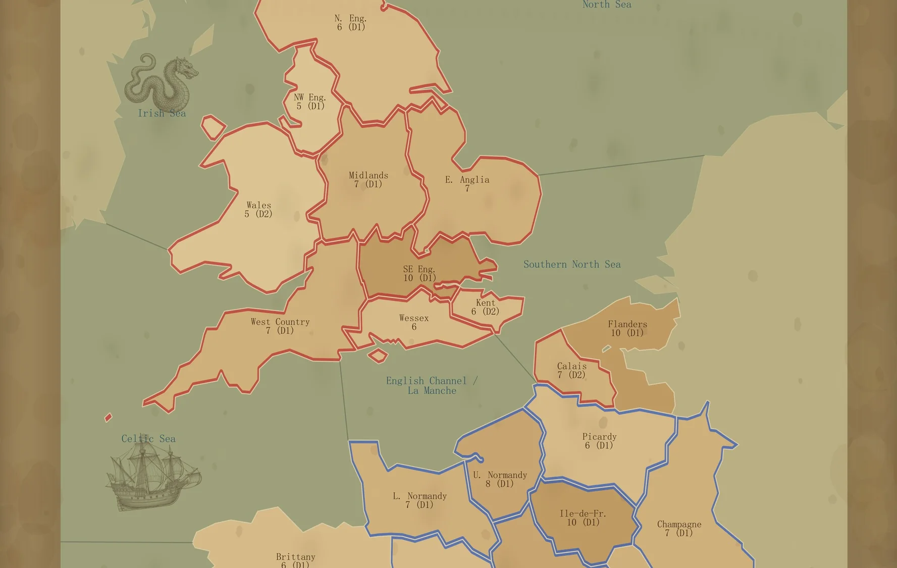
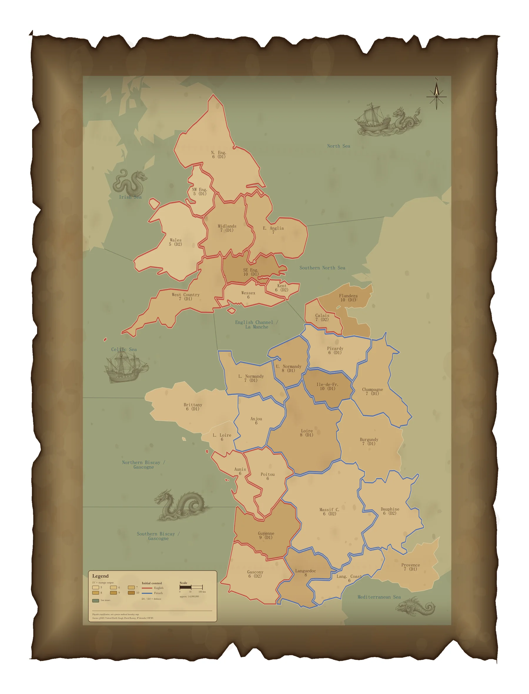
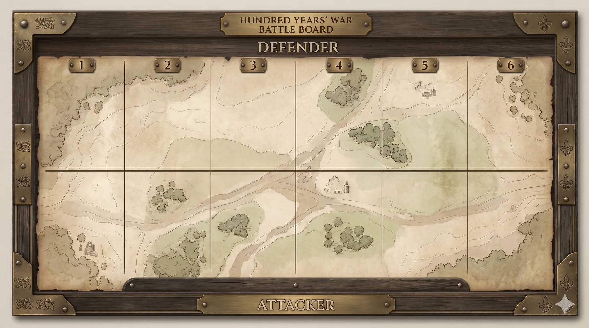
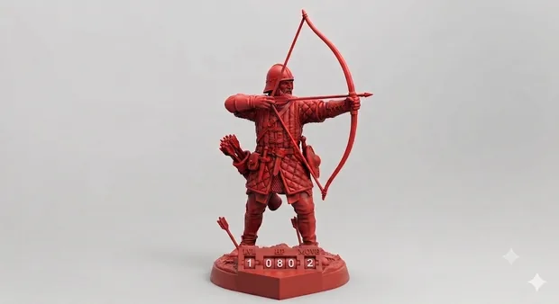
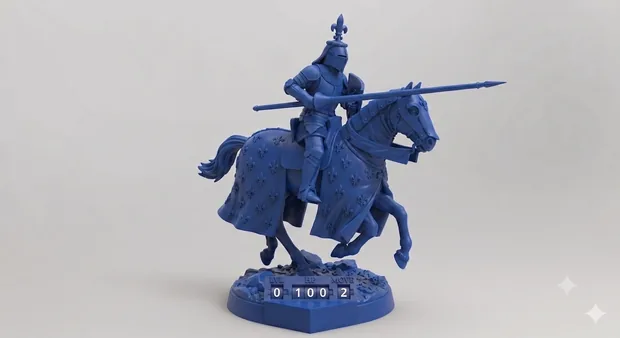
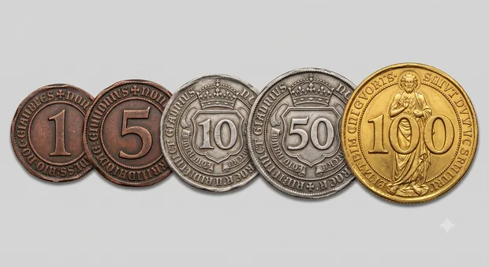
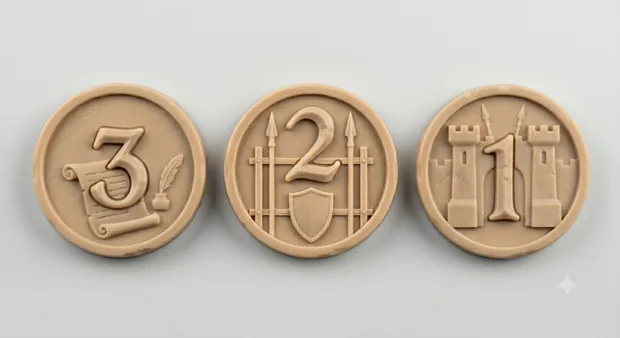
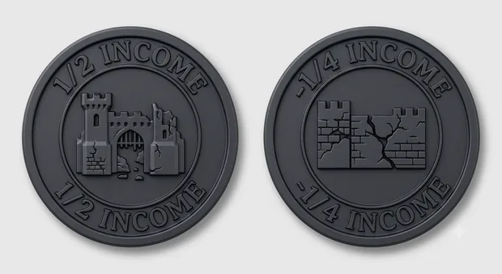

A Complete Two-Player Historical Strategy Board Game
Hundred Years' War is a complete tabletop wargame set during the 1360-1369 turning point of the Hundred Years' War. One player controls England and the other controls France. The game is built around territorial control, sea access, regional income, recruitment, one-round battles, damaged cities, and asymmetrical victory conditions.
The project began from a cartographic question, but it no longer stops at map design. It now has a playable strategic map, a full rulebook, component definitions, unit pieces, a battle board, player-facing setup, variant modules, and production-ready player materials. The map remains central, but it serves a larger playable system.
The Game Is Built Around Pressure, Not Simulation for Its Own Sake
The design does not try to reproduce every political detail of medieval Europe. Instead, it turns the war into a board-game pressure structure. England begins with strong continental holdings, Calais, and sea access. France begins with lower controlled value, but has interior position, flexible deployment, and the ability to recover ground.
Each round follows a clear sequence: upkeep and income, secret planning, reveal, action resolution, then recruitment and replenishment. This creates a strategic rhythm where players commit intentions before fully knowing the opponent's plan, then resolve movement, battle, production, and recovery through a shared procedure.
Asymmetrical Objectives
England wins by controlling Ile-de-France; France wins by controlling Southeast England. The victory conditions force both sides to think beyond passive defense.
One-Round Battles
Battles resolve through one simultaneous damage round, making positioning, flanking, encirclement, and landing penalties matter before dice are rolled.
Economic Recovery
Broken City tokens make conquest productive but not immediately clean. Captured regions need time to recover before they become reliable income sources.
Variant Modules
City Upgrade, Scorched Earth, Agricultural Reform, Military Reform, Rebel Corps, and Joan of Arc extend the game beyond a single fixed scenario.
The Map Is a Playable Board, Not an Atlas
The regional map compresses England, France, Flanders, Brittany, Burgundy, Provence, and surrounding seas into readable play spaces. Each region carries game-facing information: strategic value, defensive advantage, initial control, and movement connections. The goal is historical grounding without forcing the historical outcome.
This meant making deliberate abstractions. Some borders are simplified, cities become regional anchors, and sea zones become movement constraints. The important question was always: what does the player need to read during play?

From Strategic Movement to a Physical Battle Board
The game separates strategic movement from battle resolution. Armies move across the regional map, but when battle happens, units are placed onto a six-column battle board. The defender places first, then players alternate placement, and paired columns deal simultaneous damage.
The component set supports the tabletop game as a physical object: English, French, and neutral units; commanders; money; dice; recruitment markers; Broken City markers; and optional variant markers.


English Infantry

French Cavalry

Money

Recruitment

Broken City
Rules as Playable Decisions
The full rulebook is available as a PDF, but the portfolio page should show the rules as game design rather than as manual screenshots. The important part is how the rules create pressure: where players must commit, when they can recover, and how geography turns into strategic risk.
The rule system is organized around a few readable procedures. Each one is simple enough to execute at the table, but together they create a long-form conflict about timing, position, damaged cities, and whether either side can force a decisive territorial break.
Victory Pressure
England wins by taking Ile-de-France; France wins by taking Southeast England. If neither side breaks through by round 100, the mainland tie-break decides the war.
Turn Structure
Each round moves through upkeep and income, secret planning, reveal, action resolution, then recruitment and replenishment. Plans are committed before the opponent's full intent is known.
Movement and Sea Access
Land movement takes time, while sea zones create transport routes, landing attacks, and exposed approaches. There are no fleet units; sea battles represent transported land forces fighting at sea.
Battle Board Procedure
The defending region's value sets the active battle columns. The defender places first, players alternate placement, and paired columns deal simultaneous damage in one decisive exchange.
Economy and Recovery
Income arrives every 5 rounds, commanders every 20 rounds, and Broken City markers slow conquered regions before they recover. Conquest is powerful, but damaged territory takes time to become useful.
Variant Modules
Scorched Earth, City Upgrade, Agricultural Reform, Military Reform, Rebel Corps, and Joan of Arc can be added to change the scale and texture of the war without replacing the core rules.
The design focus
The rules are written to keep the game legible at the table: strategic geography gives players goals, secret planning creates commitment, battle columns make combat physical, and damaged cities prevent conquest from becoming a simple snowball.